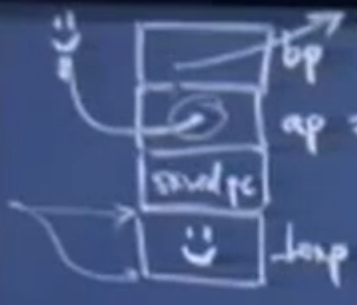
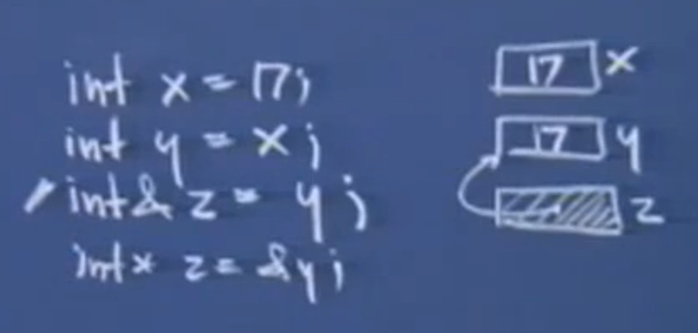
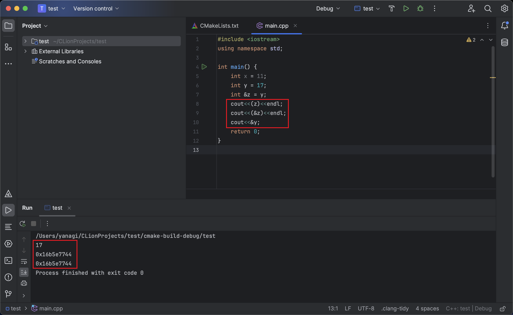
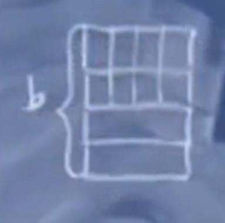
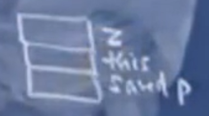
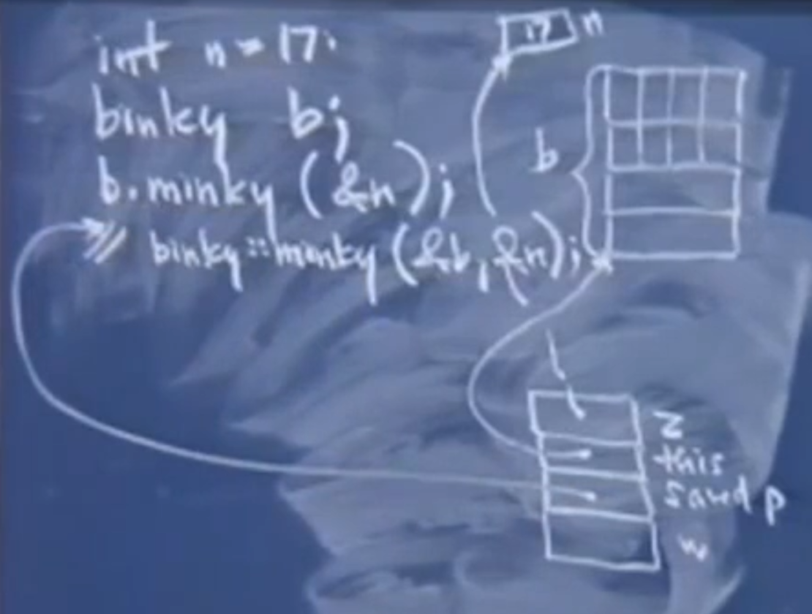

# 斯坦福编程范式 CS107_11
# C++ 的汇编
# 构造一个 foo 函数
void foo(){
int x;
int y;
x = 11;
y = 17;
swap(&x,&y);
}
汇编代码
SP = SP - 8;
M[SP + 4] = 11;
M[SP] = 17;
R1 = SP; //&y
R2 = SP + 4; //&x
SP = SP - 8; //为参数申请空间 参数的地址是从右向左看是高地址到低地址
M[SP] = R2;
M[SP + 4] = R1;
CALL<swap> //调用的同时会将PC值存储起来，以便调用完毕返回
SP = SP + 8; //释放空间
SP = SP + 8;
RET;
# 构造一个 swap 函数
void swap(int *ap,int *bp){
int temp = *ap;
*ap = *bp;
*bp = temp;
}
汇编代码
<swap>
SP = SP - 4; //为temp申请空间
R1 = M[SP + 8]; //ap
R2 = M[R1]; //*ap 对ap解引用
M[SP] = R2; //temp = *ap
R1 = M[SP+12];
R2 = M[R1];
R3 = M[SP + 8];
M[R3] = R2;
R1 = M[SP];
R2 = M[SP + 12];
M[R2] = R1;
SP = SP + 4;
RET;

从这个例子中我们可以看出来，C++ 和 C 语言的汇编过程没有什么大的区别。
# C 语言实现 swap 函数
通过 引用 进行变量值的交换。
void swap(int &a,int &b){ | |
int temp = a; | |
a = b; | |
b = temp; | |
} |
int x; | |
int y; | |
x = 11; | |
y = 17; | |
swap(x,y) |
在这里 x 和 y 没有写 & 符号，但是编译器会根据函数原型去寻找线索，然后理解这里应该传入的是一个引用类型，会自动去取这两个变量的地址。表面上看传递的是引用，实际上传递的是指针，会自动对所有引用的指针进行解引用操作。所以这里的 swap 函数的汇编代码，和上边 C++ 的汇编代码是完全一致的。
# 一个简单的引用类型的例子：
对于 int &z = y ，虽然 y 没有加 &，但是编译器会自动传入它的地址给 z。只不过编译器最终为 z 留出的空间是和 y 联系起来了。
对于 int *z = &y ，这时将图示中的阴影部分抹去就好了。
这两种代码，从汇编的角度来看其实是一样的。但是在 C 和 C++ 的层面来看，一个需要显式的写上一个 *，而另一个则不必。那么如果引用就是指针的话，那么为什么还要使用实际的指针呢？引用确实很方便，尤其是它给人们一种假象将这个名字作为某个其他地方声明的变量的别名。但是使用引用的话，一旦赋值就不能将引用重新绑定给新的左值，就是说现在已经无法放弃 z 与 y 的绑定，而重新与 x 绑定了。你不能灵活的改变这个箭头以及这个箭头所指向的地址。但是指针是可以随意改变的。所以如果只是使用引用是没有办法很容易的构造出一个链表的。
所以对于一个引用类型的变量，就把它当作是一个普通的变量进行操作就好，不用考虑指针，系统会自动进行解引用操作。


# C 和 C++ 的区别
很多人在使用C++的时候，他们还是在使用C加上一些引用和对象，只是他们偶尔使用对象和引用罢了。他们不使用继承，也不怎么使用模板，不适用C++中一些很好的方法。这样其实不是面向对象的方式。
在 C 中，结构体也可以有方法。在 C 中唯一的区别对于结构体和类来说就是：对于类默认的访问修饰符是 private 的，而对于结构体来说默认的访问修饰符是 public。编译器对这两个语法结构差不多是等同对待的，它们的不同只是在最开始有一个转换语句，它会问 “这是一个 struct 还是一个 class 呢？”
我们现在来考虑一个类，先不管构造函数和析构函数。
class binky{
public:
private:
int winky;
char *blinky;
char slinky[8];
};
这三个变量就是它唯一的数据域了。每当你声明一个这种 binky 类型的记录，只需要
binky b;
就可以了。它其实是一块内存，里面紧挨着存放着 3 个成员域，这三个域打包存放在一个矩形区域，并且从上到下的顺序是：slinky、blinky、winky

我们现在对类添加几个方法。为什么它们能够访问到 slinky 或者 winky 成员？
class binky{
public:
int dunky(int x, int y);
char * minky(int *z){
int w = *z;
return slinky + dunky(winky,winky);
}
private:
int winky;
char *blinky;
char slinky[8];
};
当我们调用 minky 函数的时候，参数其实并不是一个，而是两个，编译器会将某个 binky 类对象的地址传进去作为函数的 第0个参数 。因此此时的内存空间中，在 Saved PC 之上有两个参数，一个是 this 指针，另一个是 z
int n = 17;
binky b;
b.minky(&n);
//实际上： binky::minky(&b,&n);

随后进行函数内局部变量空间的申请。

同理，在随后调用 dunky (winky,winky) 的时候，传入的参数是 3 个，而不是 2 个。
# C++ 类中的 static 方法
下面的求两个数的最大公约数的函数，它和普通的函数没有区别，它不需要使用 类 fraction 中的任何变量，因此它没有 this 指针，因此我们可以将它写成一个 static 。在 C++ 的一个类中将一个方法设置成 static 意味着调用它的时候，并不需要类的实例作为参数，你可以将它当作一个单独的函数来调用，而实际上它也确实是一个普通函数，只不过它的作用域是在类的定义中。但是 static 不能被继承。
class fraction {
public:
fraction(int n,int d = 1);
void reduce();
private:
static int gcd(int x,int y);
}
# 编译与链接的工作原理
make 命令。使用 make 命令时，首先调用预处理器，预处理器一般用来处理 #define 和 #include 预处理指令，然后才是调用所谓的编译器，编译器负责将你的 .C 文件以及 .cc 生成对应的 .o 文件，这些文件在我们敲下 make 命令后就会在我们的目录下生成。之后进行链接操作，对 .o 文件进行链接，它会将一系列的 .o 文件按照顺序排序列起来，并且确保在执行过程中任何的调用函数都能够从该函数所在的 .o 文件中找到。之后生成可执行文件。
# 预处理器 (一部分)
在 C 语言中定义一个全局变量，一般使用 #define
#define kWidth 480 | |
#define kHeight 720 | |
printf("Width is %d.\n",kWidth); | |
int area = kWidth * kHeight; |
预处理器读取到带有 # 的行时，预处理器内部会有某个 hashset，将 kWidth 作为 key，将 480 作为值进行链接。随后预处理器继续读程序，并将它所遇到的 kWidth 进行单纯的文字替换为 480，就好像你本来就写的是 480 一样。并且预处理器甚至不知道 480 是一个数，它只是认为是 4、8、0 字符拼接。